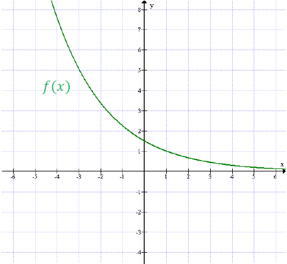
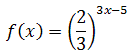
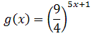
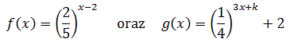
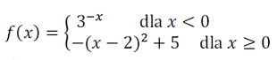
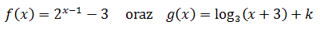
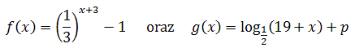

Różne zadania z funkcji wykładniczej
Poniższe zadania są nieco trudniejsze i wykraczają poza poziom podstawowy.
Napisz wzór funkcji wykładniczej f(x) = ax,
gdzie a > 0, wiedząc że do jej wykresu należy punkt A(3, 1/8).
 Rozwiązanie PDF
Rozwiązanie PDF
- Naszkicuj wykres funkcji g(x) = f(x + 2) - 1.
- Oblicz miejsca zerowe funkcji g(x).
- Dla jakich argumentów funkcja g(x) przyjmuje wartości ujemne?
Rozwiązanie PDF Na rysunku przedstawiony jest wykres funkcji f(x) =
(2/3)x - 1, gdzie a > 0, \(x\epsilon \mathbb{R} \). 
Rozwiązanie PDF
- Oblicz wartość funkcji dla argumentu 1/2.
- Oblicz argument dla którego wartość funkcji wynosi 16/81.
- Dla jakich argumentów wartości funkcji f są większe od \(2\frac{1}{4}\).
- Napisz wzór i naszkicuj wykres funkcji g(x) = f(-x) - 3.
Rozwiązanie PDF
Dla jakich argumentów funkcja  przyjmuje wartości
większe niż funkcja 
Rozwiązanie PDF
Rozwiązanie PDF Wyznacz wartość parametru k, jeżeli wiadomo, że dla argumentu x = 1
funkcje  przyjmują tą
samą wartość.
Rozwiązanie PDF
Rozwiązanie PDF Naszkicuj wykres funkcji:  Na podstawie wykresu funkcji f ustal liczbę
rozwiązań równania f(x) = k, gdzie k?R, w zależności od wartości
parametru k.
Rozwiązanie PDF
Rozwiązanie PDF Wykresy funkcji  mają z osią OY ten sam punkt wspólny A. Oblicz
k i podaj współrzędne punktu A.
Rozwiązanie PDF
Rozwiązanie PDF Funkcje  mają to samo miejsce zerowe. Oblicz wspólne miejsce zerowe obu funkcji oraz wartość
parametru p.
Rozwiązanie PDF
Rozwiązanie PDF Do wykresu funkcji, określonej dla wszystkich liczb rzeczywistych wzorem \(
y=-2^{x-2} \), należy punkt
A.\(A=(1,-2) \)
B.\(B=(2,-1) \)
C.\(C=(1,\frac{1}{2}) \)
D.\(D=(4,4) \)
B
Dane są dwie funkcje określone dla wszystkich liczb rzeczywistych \( x \) wzorami
\( f(x)=-5x+1 \) oraz \(g(x) = 5^x\). Liczba punktów wspólnych wykresów tych funkcji wynosi
A.\(3\)
B.\(2\)
C.\(1\)
D.\(0\)
C
Zbiorem wartości funkcji \(f\) określonej wzorem \(f(x)=3^{x+2}-3\) jest zbiór
A.\( (-2;\infty ) \)
B.\( (-3;-2) \)
C.\( (3;\infty ) \)
D.\( (-3;\infty ) \)
D
Funkcja wykładnicza określona wzorem \(f(x)=3^x\) przyjmuje wartość \(6\) dla
argumentu
A.\( x=2 \)
B.\( x=\log_{3}2 \)
C.\( x=\log_{3}6 \)
D.\( x=\log_{6}3 \)
C